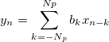

/math-cbf2a8ae7d00ceaa3a438a13f080810a.png "\left\{g_i|i = 1,2,...,N\right\}") bezeichnen die Ausgabedatenpunkte. Jedes wird berechnet aus
bezeichnen die Ausgabedatenpunkte. Jedes wird berechnet aus
Wenn die Glättungsmethode der gleitende Durchschnitt, Savitzky-Golay oder der Rangordnungsfilter ist, wird jeder geglättete Datenpunkt aus den Datenpunkten innerhalb eines beweglichen Fensters berechnet Angenommen, sind die Eingabedatenpunkte und bezeichnen die Ausgabedatenpunkte. Jedes wird berechnet aus
wobei npts der Wert der Variable Punkte des Fensters ist.
Bei Verwendung der Glättungsmethode FFT-Filter wird jedoch kein bewegliches Fenster verwendet. Stattdessen wird das gesamte Signal verarbeitet.
Die Methode des gleitenden Durchschnitts führt die einfachste mögliche Mittelwertbildung durch: Jeder ist der Durchschnitt der Datenpunkte innerhalb des beweglichen Fensters. Wenn die Option Gewichteter Durchschnitt verwendet wird, wird der Durchschnitt mit Hilfe der gewichteten Mittelwertbildung berechnet. In diesem Fall wird eine parabolische Gewichtung verwendet, wobei der Gewichtungsbereich auf 1 normiert wird. Für ein Fenster, dessen Mitte in i liegt (d.h., der i-te gemittelte Punkt wird berechnet), beträgt die Gewichtung, die dem j-ten Punkt (j=0, 1, ... npts-1) entspricht:
wobei N die Anzahl der Punkte des Fensters ist.
Die Savitzky-Golay-Methode führt eine polynomielle Regression für die Datenpunkte in dem beweglichen Fenster durch. wird dann als der Wert des Polynoms bei Position i berechnet.
Für den Rangordnungsfilter wird das p-te Quantil der Punkte in dem beweglichen Fenster als zugeordnet, wobei p durch den Parameter Perzentil festgelegt wird. Das p-te Quantil (oder 100 p-te Perzentil) wird aus der empirischen Verteilungsfunktion folgendermaßen berechnet:
Es sei /math-7ae8e6c1c298971d77efadc3dad1752c.png "npts\cdot p/100=j+g")
wobei j der ganzzahlige Teil von und g der Bruchteil davon ist.
Dann kann das p-te Quantil, das mit y bezeichnet wird, mit folgenden Gleichungen berechnet werden:
wobei /math-1f89889020cdc84d9e1c35237cb62f65.png "x_j") der j-te (j=0, 1, ... npts-1) Punkt in dem beweglichen Fenster ist.
der j-te (j=0, 1, ... npts-1) Punkt in dem beweglichen Fenster ist.
Wenn die Methode des FFT-Filters ausgewählt ist, führt Origin Folgendes durch:
/math-8a6ec61a846152b8540507019900a780.png "f_{cutoff} = \frac {1}{2n\Delta t}")
/math-5a72f1304af0783657605aed0e38201a.png "\Delta t") der Zeitabstand (oder allgemeiner die Abszisse) zwischen zwei nebeneinander liegenden Datenpunkten ist. Größere Werte des n Ergebnisses in unteren Grenzfrequenzen und daher ein größerer Glättungsgrad. Die transformierten Daten werden mit einem einseitigen Fenster multipliziert, so dass die obenstehende Formel weiter durch 2 geteilt wird, um einem zweiseitigen Fenster zu entsprechen.
der Zeitabstand (oder allgemeiner die Abszisse) zwischen zwei nebeneinander liegenden Datenpunkten ist. Größere Werte des n Ergebnisses in unteren Grenzfrequenzen und daher ein größerer Glättungsgrad. Die transformierten Daten werden mit einem einseitigen Fenster multipliziert, so dass die obenstehende Formel weiter durch 2 geteilt wird, um einem zweiseitigen Fenster zu entsprechen.|
Hinweis:
|
Die Abkürzungen Lowess und Loess stehen für "locally weighted scatterplot smoothing" bzw. "locally weighted least squares", etwa "lokal gewichtete Glättung von Punktdiagrammen" bzw. "lokal gewichtete kleinste Quadrate". Es wird von "lokal" gesprochen, weil jeder geglättete Wert mit Hilfe der Nachbarpunkte berechnet wird, die sich innerhalb eines bestimmten Datenbereichs von Werten befinden. Diese Methode wird klassisch mit folgenden Schritten durchgeführt:
/math-1ba8aaab47179b3d3e24b0ccea9f4e30.png "x_i") und alle Nachbarpunkte innerhalb des Datenbereichs mit Hilfe der trikubischen Gewichtungsfunktion...
und alle Nachbarpunkte innerhalb des Datenbereichs mit Hilfe der trikubischen Gewichtungsfunktion...
/math-d2de986db2dcdfead9130a94deacc948.png "w_i(x)=(1-(\frac{|x-x_i|}{d_i})^3)^3")
/math-9dd4e461268c8034f5c8564e155c67a6.png "x") ein Nachbarpunkt innerhalb des mit dem aktuellen Zentrum verbundenen Datenbereichs ist, und
ein Nachbarpunkt innerhalb des mit dem aktuellen Zentrum verbundenen Datenbereichs ist, und /math-d247f594c78d0d2be10fc6d82512cc4e.png "d_i") die Distanz entlang der Abszisse (X-Achse) von bis zum am weitesten entfernt liegenden Nachbarpunkt innerhalb des Datenbereichs ist.
gegeben ist.
die Distanz entlang der Abszisse (X-Achse) von bis zum am weitesten entfernt liegenden Nachbarpunkt innerhalb des Datenbereichs ist.
gegeben ist./math-84ceb2513893acb7c9ea001cc9053995.png "x_{i+1}") und führen Sie dann Schritt 1-3 durch, um den vorhergesagten Wert
und führen Sie dann Schritt 1-3 durch, um den vorhergesagten Wert /math-d845615daf118601c7a2d6719f7d165e.png "(x_{i+1},\hat{y}_{i+1})") zu erhalten. Die Berechnung ist beendet, wenn alle Punkte berechnet sind.
zu erhalten. Die Berechnung ist beendet, wenn alle Punkte berechnet sind.Der Binomialfilter ist ein gewichteter Filter des gleitenden Durchschnitts. /math-e447c37303aa003c6e1b9992045ddfda.png "{x_n}") seien die Eingabequelldaten und
seien die Eingabequelldaten und /math-83c66063e0d9b8864bd422ee8386d59f.png "{y_n}") die geglätteten Ausgabedaten.
die geglätteten Ausgabedaten.

Die Sequenz der geglätteten Koeffizienten /math-e23e5c6178fcede4de9a9673bf51cfd7.png "b_k") wird gegeben durch:
wird gegeben durch:
und
/math-d32b55686a350cbec96b05c8c8be3bbb.png "b_{-k}=b_{k}")
ist die Ordnung.
Die Grenzfrequenz wird berechnet mit:
/math-42d1e7ee57aef355b30eddda869213a7.png "fc=\frac{2}{\pi}arccos(Ac^{1/2N_p})\frac{fs}{2}")
/math-3017d911efceb27d1de6a92b70979795.png "dt") ist das Abtastintervall.
ist das Abtastintervall. /math-8819a837186918b90b59cc316f36b1e1.png "Ac") ist die Grenzamplitude bei -6dB,
ist die Grenzamplitude bei -6dB, /math-57caf3aa6efe351c51c785be280b5c0d.png "Ac=0.5") . Die Grenzfrequenz nimmt bei aufsteigender Ordnung ab.
. Die Grenzfrequenz nimmt bei aufsteigender Ordnung ab.